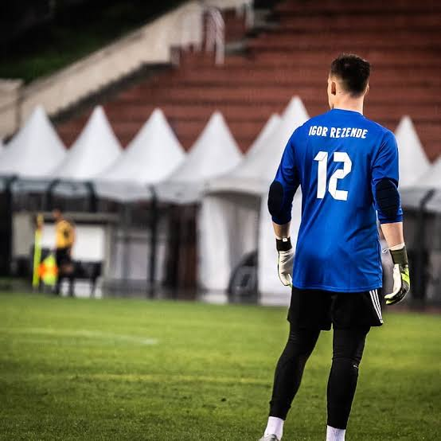

Site espeialmente voltado para o Igor Rezende!!!!!
SOBREIgor Rezende, mais conhecido como Lituano, é um futebolista brasileiro que atua como goleiro. Atualmente jogo no Corinthians Fut 7, mas já jogou profissionalmente! Também faz parte do canal do youtube Brazil Kickers que fala sobre futebol.
Iniciou oficialmente sua carreira quando chegou ao Tupi em 2012 e logo após fazer parte do grupo que disputou o Campeonato Mineiro Sub20 e a Taça BH de Juniores [1], se destacou no ano de 2013 durante a Copa Integração Sub20 [2] por suas defesas de pênaltis, defendendo uma cobrança nas semifinais e mais duas na grande final. Defesas que contrabalancearam 3 cobranças consecutivamente desperdiçadas por seus companheiros, onde a equipe de Cataguases venceu o Tupi por 2 x 1[3]. Foi o Melhor Goleiro da competição com 6 gols sofridos em 10 jogos, se destacando juntamente com Serginho Portugal, artilheiro da competição com 6 gols.Igor se uniu ao elenco principal do Tupi no dia 7 de Janeiro de 2014 [4], relacionado para 5 partidas do Campeonato Mineiro como reserva, com o fim de seu vínculo com o clube em Agosto de 2014.
Em Setembro, integrou o grupo do Uberabinha que chegou nas semifinais da Copa Alterosa Sub20[5] com uma bela campanha, tendo seu trabalho coroado com a premiação de Goleiro Menos Vazado ,com 3 gols sofridos em 9 jogos, e concorrente nas premiações de Revelação e Craque da competição.
Em maio de 2015, foi emprestado ao Artsul-RJ, começando entre os reservas e tendo oportunidade com a lesão do goleiro Adilson na sétima rodada da competição. Foi destaque na conquista do primeiro turno da Série C do Campeonato Carioca, o primeiro título da história do clube. Foi eleito o melhor goleiro da 8ª rodada da competição, na vitória do Artsul sobre Búzios por 2 a 0 no Estádio Nivaldo Pereira.
Ao fim da competição, o retrospecto do clube foi acima do esperado conquistando o título do primeiro turno, sendo vice-campeão no segundo turno na derrota por 2-0 para Campos e sendo vencido na grande final da Série C do Campeonato Carioca pela forte equipe do Itaboraí, no resultado agregado de 3-1 para a equipe do Itaboraí, resultado ocorrido na primeira partida em Madureira. Na segunda partida, fez brilhantes defesas que o levaram a ser o destaque do confronto pelas rádios FutRio e NetGol, mas que foram insuficientes para levar a equipe de Austin ao título, no momento que precisava de apenas um gol para levar a disputa para as penalidades, placar final de 0-0 e título para Itaboraí. Igor Rezende no América (RJ) Seu vínculo com o Artsul se encerrou em 31 de Agosto de 2015.
Após 2 anos sem atuar, fazendo outros trabalhos fora do futebol, voltou a jogar ao assinar com o São José(RJ)[7] , para a sequência da Série C do Campeonato Carioca de 2018. Foi destaque logo na estreia, conseguindo importante vitória e sendo escolhido para a Seleção da Rodada FutRio.[8]. Teve apenas 3 jogos, com a equipe sendo eliminada às vésperas de um jogo contra o Atlético Carioca, com condições de classificação. O clube do Noroeste Fluminense deixou de pagar os três borderôs - taxas operacionais - das partidas em que foi mandante na primeira fase da competição. [9]